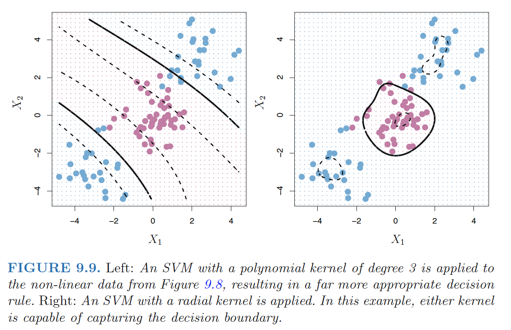
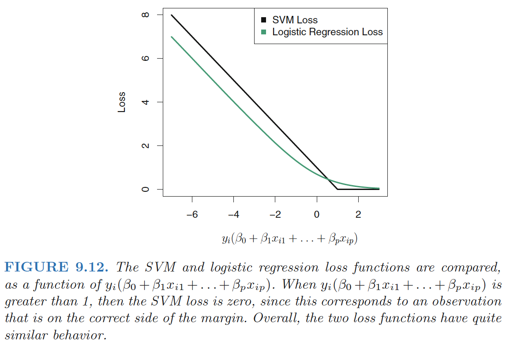

SVMs with Kernel
The support vector machine (SVM) is an extension of the support vector classifier that results from enlarging the feature space using kernels.
The solution to the support vector classifier problem involves only the inner products of the observations: \[ \langle x_i,x_{i^{'}} \rangle =\sum_{j=1}^px_{ij}x_{i^{'}j} \] (Details won't be discussed in this note)
The linear support vector classifier can be represented as \[ f(x)=\beta_0+\sum_{i=1}^n \alpha_i \langle x,x_i \rangle \]
- \(α_i\) is nonzero only for the support vectors in the solution—that is, if a training observation is not a support vector, then its \(α_i\)equals zero.
So if \(S\) is the collection of indices of these support points: \[ f(x)=\beta_0+\sum_{i \in S}^n \alpha_i \langle x,x_i \rangle \] Generalization: Kernel \[ K(x_i,x_{i^{'}}) \] Kernel: Kernel is a function that quantifies the similarity of two observations.
- Linear kernel: \(K(x_i,x_{i^{'}})=\sum_{j=1}^px_{ij}x_{i^{'}j}\)
- Linear kernel essentially quantifies the similarity of a pair of observations using Pearson (standard) correlation.
- Polynomial kernel of degree d: \(K(x_i,x_{i^{'}})=(1+\sum_{j=1}^px_{ij}x_{i^{'}j})^d\)
- fitting a support vector classifier in a higher-dimensional space involving polynomials of degree \(d\).
- Radial kernel: \(K(x_i,x_{i^{'}})=\exp(-\gamma \sum_{j=1}^p(x_{ij}-x_{i^{'}j})^2)\)
- Radial kernel has very local behavior: only nearby training observations have an effect on the class label of a test observation
- If a given test observation \(x^∗ = (x^∗_1 . . .x^∗_p)^T\) is far from a training observation \(x_i\) in terms of Euclidean distance; \(\Rightarrow\) $ _{j=1}p(x_{ij}-x_{i{'}j})^2 $ will be large \(\Rightarrow\) \(K(x_i,x_{i^{'}})=\exp(-\gamma \sum_{j=1}^p(x_{ij}-x_{i^{'}j})^2)\) will be very tiny. \(\Rightarrow\) \(x_i\) will play virtually no role in \(f(x^∗)\).
- Radial kernel has very local behavior: only nearby training observations have an effect on the class label of a test observation
Support Vector Machine: When the support vector classifieris combined with a non-linear kernel, the resulting classifier isknown as a support vector machine. \[ f(x)=\beta_0+\sum_{i \in S}^n \alpha_i K(x,x_i) \] 
Advantage of Kernel over enlarging the feature space using functions of the original features:
- Computational: one need only compute \(K(x_i,x_{i^{'}})\) for all \(\left(\begin{array}{c}n\\ 2\end{array}\right)\) distinct pairs \(i, i^{'}\). This can bedone without explicitly working in the enlarged feature space.
- Curse of dimensionality: for some kernels, such as the radial kernel, the feature space is implicit and infinite-dimensional.
SVMs with More than Two Classes
One-Versus-One Classification
A one-versus-one or all-pairs approach constructs \(\left(\begin{array}{c}K\\ 2\end{array}\right)\) SVMs, each of which compares a pair of classes
- One such SVM might compare the \(k\)-th class, coded as +1, to the \(k^{'}\)-th class, codedas −1.
- We classify a test observation using each of the \(\left(\begin{array}{c}K\\ 2\end{array}\right)\) classifiers.
- We tally the number of times that the test observation is assigned to each of the K classes.
- The final classification is performed by assigning the test observation to the class to which it was most frequently assigned in these \(\left(\begin{array}{c}K\\ 2\end{array}\right)\) pairwise classifications.
One-Versus-All Classification
The one-versus-all approach:
- We fit \(K\) SVMs, each time comparing one of all the K classes to the remaining K − 1 classes.
- Let \(β_{0k}, β_{1k}, . . . , β_{pk}\) denote the parameters that result from fitting an SVM comparing the kth class(coded as +1) to the others (coded as −1).
- Let $ x^∗$ denote a test observation. We assign the observation to the class for which \(β_{0k}x_1^*+β_{1k}x_2^*+, . . . ,+ β_{pk}x_p^*\) is largest, as this amounts to a high level of confidence that the test observation belongs to the kth class rather than to any of the other classes.
Relationship to Logistic Regression
Rewrite the criterion (9.12)–(9.15) for fitting the support vector classifier \(f(X) = β_0 + β_1X_1 + . . . + β_pX_p\) as
\[ \min_{\beta_0,...,\beta_p}\left\{ \sum_{i=1}^n\max[0,1-y_If(x_i)]+\lambda\sum_{j=1}^p\beta_j^2 \right\} \]
- λ is small: few violations to the margin ; high-variance, low-bias; \(\Leftrightarrow\) small \(C\);
“Loss + Penalty” form: \[ \min_{\beta_0,...,\beta_p}\left\{ L(\mathbf{X},\mathbf{y},\beta)+\lambda P(\beta) \right\} \]
- \(L(\mathbf{X},\mathbf{y},\beta)\) : loss function
- \(P(\beta)\): penalty function
Ridge regression and the lasso: \[ L(\mathbf{X},\mathbf{y},\beta)=\sum_{i=1}^n \left( y_i-\beta_0-\sum_{j=1}^p x_{ij}\beta_j \right)^2 \\ P(\beta) = \sum_{j=1}^p \beta_j^2 \quad ridge \, regression \\ P(\beta) = \sum_{j=1}^p |\beta_j| \quad lasso \] SVM:hidge loss \[ L(\mathbf{X},\mathbf{y},\beta)=\sum_{i=1}^n \max[0,1-y_i(\beta_0+\beta_1x_{i1}+,,,+\beta_px_{ip})] \] 
- Due to thesimilarities between their loss functions, logistic regression and the supportvector classifier often give very similar results.
- When the classes are wellseparated, SVMs tend to behave better than logistic regression